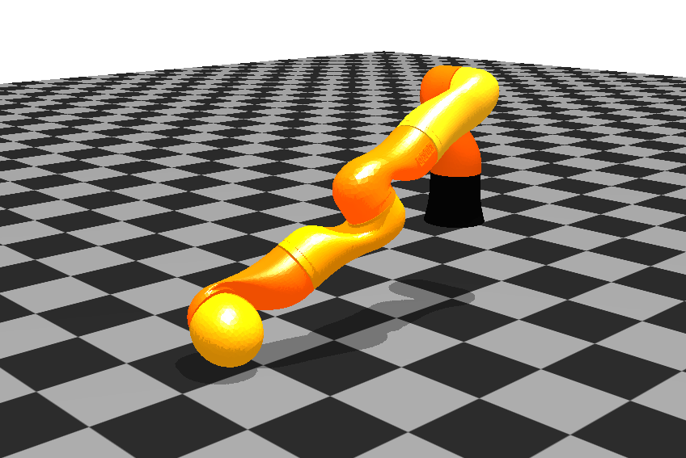

Kötelező Program
Ütemezés
| Okt. hét | Dátum | Számonkérés |
|---|---|---|
| 8. | márc. 31 | Kötelező programok ismertetése. Projekt labor I. |
| 13. | máj. 26 | Projekt labor II. |
| 14. | jún. 2 | Kötelező programok bemutatása. |
Nehézségi fokozatok és érdemjegyek
A kötelező programok három nehézségi fokozatban teljesíthetők. A nehézségi fok meghatározza a legjobb érdemjegyet, amely a teljesítéséért kapható!
| Nehézségi fok | Legjobb megszerezhető érdemjegy |
|---|---|
| Basic | 3 |
| Advanced | 4 |
| Epic | 5 |
Tip
A feladatok úgy vannak megadva, hogy érdemes a Basic szinttel kezdeni, és onnan fokozatosan építkezni az Epic szintig.
A kötelező programok a következő szempontok szerint kerülnek értékelésre:
- Bizonyítottan saját munka
- Értékelhető eredményeket produkáljon
- Verziókövetés használata, feltöltés GitHub/GitLab/egyéb repoba
- Launch fájlok
- Megoldás teljessége
- Megfelelő ROS kommunikáció alkalmazása
- Program célszerű ROS struktúrája
- Implementáció minősége
- Kód dokumentálása
Tip
ChatGPT és egyéb MI eszközök használata megengedett.
Évközi jegy
A félév elfogadásának feltétele, hogy mind a két ZH, mind a kötelező program értékelése legalább elégséges. A két ZH közül az egyik az utolsó óra alkalmával pótolható.
Félév végi jegy
\(Jegy = (ZH1 + ZH2 + 2 \times KötProg) / 4\)
Kötelező program témák
1. TurtleBot3
1.1. TurtleBot akadály elkerülés

- Basic: Szimulátor élesztése, SLAM tesztelése. ROS node/node-ok implementálása szenzorok adatainak beolvasására és a a robot mozgatására.
- Advanced: ROS rendszer implementálása akadály felismerésére és az akadályt kikerülő trajektória tervezésére és megvalósítására szimulált környezetben bármely szenzor felhasználásával.
- Epic: Nyűgözz le!
1.2. TurtleBot pályakövetés

- Basic: Szimulátor élesztése, SLAM tesztelése. ROS node/node-ok implementálása szenzorok adatainak beolvasására és a a robot mozgatására.
- Advanced: ROS rendszer implementálása pályakövetésre szimulált környezetben bármely szenzor felhasználásával(pl. fal mellett haladás adott távolságra LIDAR segítségével).
- Epic: Nyűgözz le!
Image source: https://robots.ros.org/turtlebot3/
1.3. TurtleBot objektum követés/visual servoing
- Basic: Szimulátor élesztése, SLAM tesztelése. ROS node/node-ok implementálása szenzorok adatainak beolvasására és a a robot mozgatására.
- Advanced: ROS rendszer implementálása objektum megkeresésére/felismerésére és követésére/megközelítésére szimulált környezetben bármely szenzor felhasználásával (pl. visual servoing).
- Epic: Nyűgözz le!
1.4. TurtleBot action library
- Basic: Szimulátor élesztése, SLAM tesztelése. ROS node/node-ok implementálása szenzorok adatainak beolvasására és a a robot mozgatására.
- Advanced: Egyszerű műveleteket tartalmazó, ROS action alapú könyvtár és ezeket végrehajtó rendszer implementálása (pl. push object, move to object, turn around).
- Epic: Nyűgözz le!
2. YouBot
2.1. YouBot ROS integráció
- Basic: YouBot repo build-elése, megismerése
- Advanced: Szimulált robot mozgatása csuklótérben ROS környezetben
- Epic: Tesztelés valós roboton és/vagy nyűgözz le!
3. AMBF
AMBF build-elése
Fork-oljuk az AMBF csomagot, majd a fork-ot clone-ozzuk:
cd ~/ros2_ws/src
git clone <MY_AMBF_FORK.git>
cd ~/ros2_ws
colcon build --symlink-install
cd ~/ros2_ws/src/ambf/bin/lin-x86_64
./ambf_simulator -l 4
3.1. da Vinci sebészrobot ROS integrációja AMBF szimulátorban
- Basic: Szimulátor élesztése, robot vezérlése joint space-ben és task space-ben (IK már implementálva AMBF-ben) ROS-ból CRTK szerinti topic-okon keresztül
- Advanced: Objektumok detektálása Peg transfer puzzle-ben
- Epic: Autonóm manipuláció Peg transfer-en és/vagy nyűgözz le!
3.2. KUKA robotkar ROS integrációja AMBF szimulátorban

- Basic: Szimulátor élesztése, robot vezérlése joint space-ben ROS-ból
- Advanced: Trajektóriák generálása joint space-ben
- Epic: Inverz kinematika implementálása és/vagy nyűgözz le!
3.3. PR2 humanoid robot ROS integrációja AMBF szimulátorban

- Basic: Szimulátor élesztése, robot vezérlése joint space-ben ROS-ból
- Advanced: Robot vezérlése task space-ben, IK?
- Epic: Trajektóriatervezés/Navigáció/Manipuláció és/vagy nyűgözz le!
X. Saját téma
Megegyezés alapján.